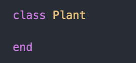
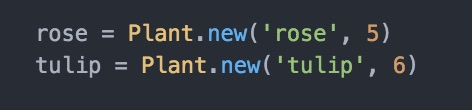
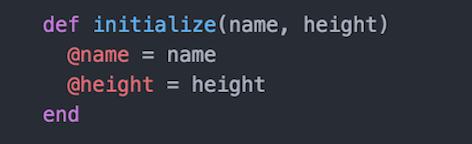
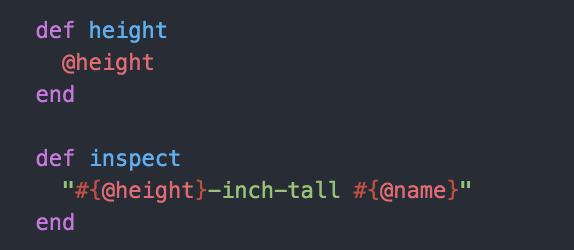
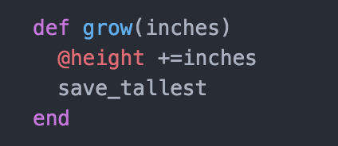
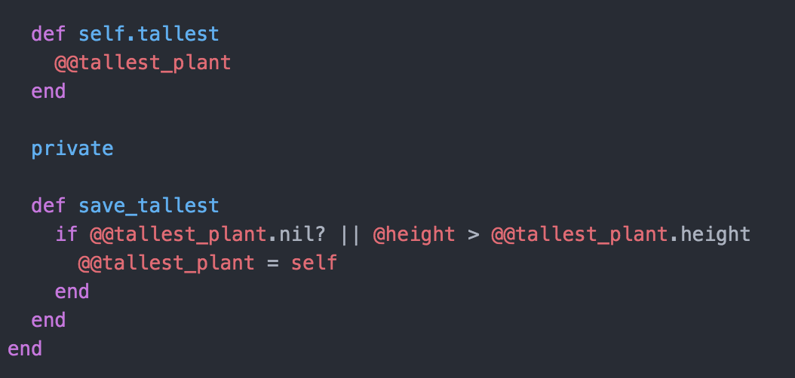
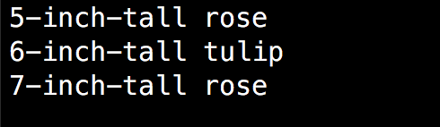

Ruby is an object oriented programming language which involves class and objects. Objects are the key to understand object-oriented technology. If you look around, you will see a lot of examples of real-world objects such as your dog, or your bike etc. Real-world objects hare two characteristics: state and behavior. Dog has state (name, color, hungry) and behavior (barking). Bike also have state (currect pedal, current gear) and behavior (changing gear). Identifying state and behavior for real-worl objects is great way to begin thinking about objects in programming. Software objects are conceptually similar to real-world objects; they also consists of state and behavior. An object stores its state in fields called variables(local, instance and global) and exposes its behavior through methods (functions). Methods operate on an object's state and serve as the primary mechanism for object-to-object communication or functions.
Let's make sure that we understand the differences between local and instance variables!To store any data or string in computer's memory for use later, you need to give the string a name, programmers call this name variable.
Local variables begin with a lowercase letter or _ . Local variable declared within subroutines or programming blocks. Their local scope means they can only be used within the subroutine or program block they are declared in. Local variables have limited scope, which means they are declared when a function or subroutine is called, and once the function ends, the memory take up by the variable is released. (this is not the case for global variables).
Instance variables is bound to the specific instance of the class. An instance variable makes itself available to every method of the object by binding itself to the entire object. Whenever you have class, instance variables are bound to an instance of a class, what we call it, state of an object. When you want to define the state of an object and use it anywhere within the class, we use instance variables. An instance variables starts with an '@' sign. You can get and set these instance variables by creating functions.
Class is a blueprint for an object which holds the methods and behaviours in it. You can define multiple methods within a class. When a new class is created, an object of type Class is initialized and assigned to a global constant. When object = ClassName.new is called, a new object is created, which is the instance of this class.
A class can be defined as:

An object can be created as:

Now, we are initializing the instance variables, @name and @height as:

What if we want to include some properties? Let's create some methods to see what inches our rose and tulib have? Then, we need to define instance methods as:

Ok, that's looking pretty cool. We now know how tall our flowers. Of course, our flowers grow as time passes just as every flowers. Shall we see what we can create a method to grow our flowers?

After we grew our plant, we now want to find out which plant is the tallest. Therefore, we create global instance of @@tallest_plantand global method of self.tallest. We also make save.tallest private method because we don't want anyone to access and change it.

Great!! Are you excited what will be the output? Let's see,

After our flowers grow 2-inches, our program finds out which flower is the tallest.You can do many programs with classess like generating passwords, checking credit cards more. Got an idea what you want to built with classess so happy coding!!!